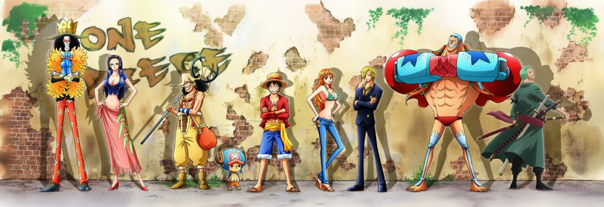
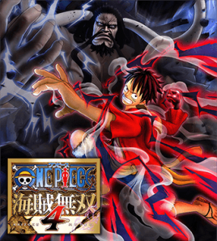
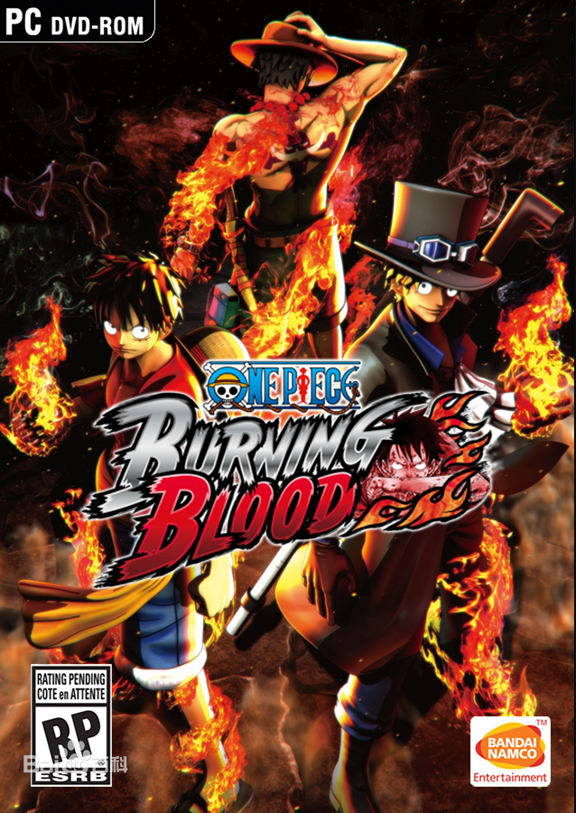

| 网站首页 | TV版目录 | 角色资料 | 精选壁纸 | 衍生作品 | 果实大全 | 海贼论坛 | 关于我 |
|---|

《海贼无双4》是由KOEI TECMO开发制作，以日本漫画《海贼王》为题
材所改编的动作游戏《海贼无双》系列的第四部作品。
该游戏以“和一骑当千的夥伴们一起冒险”为游戏主轴，让玩家可透过爽快的ONE PIECE动作体验动画中的冒险旅程。以"拟真的ONE PIECE战场体验"为核心概念，在动作场面中加入建筑物的破坏及烟尘弥漫的效果等，力求再现ONE PIECE战场。此外也添加系列作中从未出现的人物的破坏动作。
中文名 海贼无双4
原版名称 ワンピース 海賊無双 4 / ONE PIECE: Kaizoku Musou 4
其他名称 One Piece：Pirate Warriors 4
游戏类型 动作
游戏平台 PS4/PC（Steam）/Xbox One/Nintentdo Switch
所属系列 《海贼无双》
地 区 日本
开发商 KOEI TECMO
发行商 NBGI

海贼王：燃烧之血
《海贼王：燃烧之血》是由Spike Chunsoft公司开发的一款格斗类游戏，于2016年4月21日发行。该游戏是以原著《海贼王》为题材而改编的格斗游戏，讲述一个叫路飞的少年为了与因救他而断臂的香克斯的约定而出海冒险的故事。
中文名 海贼王：燃烧之血
原版名称 ワンピース バーニングブラッド
其他名称 One Piece：Burning Blood
游戏类型 格斗
游戏平台 PC/PS4/Xbox
所属系列 《海贼王》
地 区 日本
开发商 Spike Chunsoft
发行商 BANDAI NAMCO
发行日期 2016年4月21日
玩家人数 单人